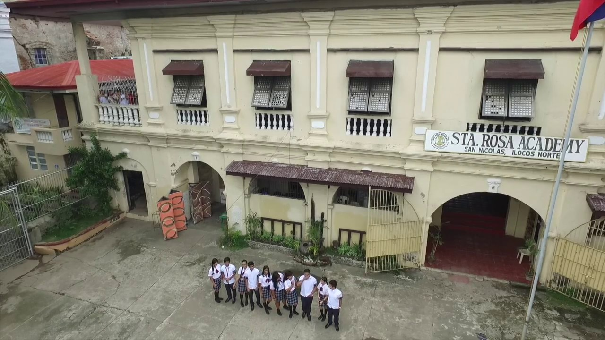
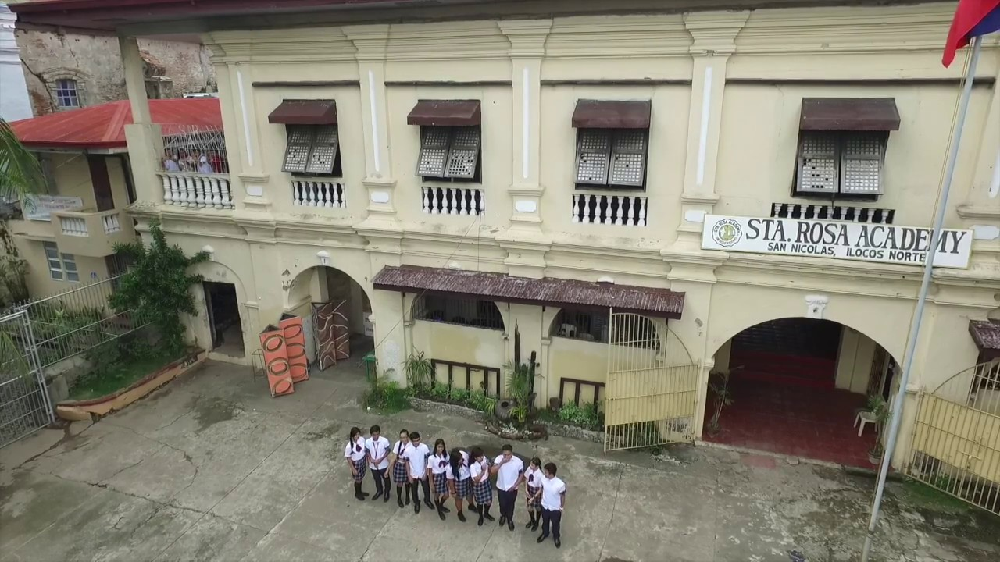

About San Nicolas
Etymology
- The present name of San Nicolas was given in the year 1733, after Saint Nicholas de Tolentino, who was believed to have protected the people against floods, earthquakes, fires, typhoons and other calamities. It is significant that in Ilocos Norte, only San Nicolas was named after a saint.
History
- Like any other town in the ancient province of Ilocos, San Nicolas was established by Augustinian missionaries. Vigan, the first Spanish mission center in this region, was founded in 1572. In the year 1575, when the Spaniards first explored the Laoag (Padsan) River, they met hostile resistance from the natives of San Nicolas and Laoag. In another expedition dispatched from Vigan in 1584 San Nicolas was established and Laoag followed a year later.
San Nicolas Catholic Church built in 1701 is one of the oldest buildings in this province. Its original structure is one of the must see places of the town. The Church and the attached Santa Rosa Academy Building, the well preserved Municipal Hall and the old Town Plaza sprawled between them constitute the heart of the town center. These buildings and structures are originally built and continue to be festooned with earthen bricks, which is among the products of the surviving locals.
 

Geography
- San Nicolas is 484 kilometres (301 mi) from Metro Manila and 3 kilometres (1.9 mi) from Laoag City, the provincial capital.
Barangays
- San Nicolas is politically subdivided into 24 barangays. Each barangay consists of puroks and some have sitios.